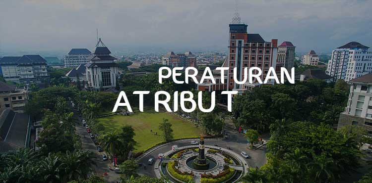
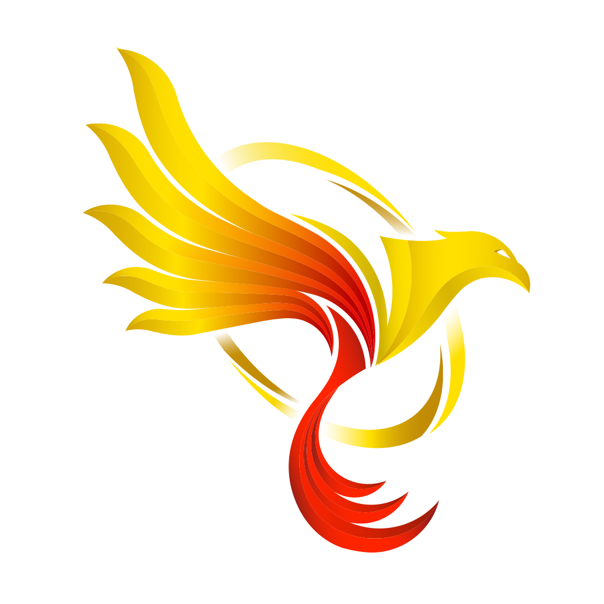

ATRIBUT MAHASISWA SAAT PELAKSANAAN KRIMA
BIT PKKMB VOKASI
A. ATRIBUT SELURUH MAHASISWA BARU
- Bagi seluruh mahasiswa baru WAJIB menggunakan virtual background zoom yang diberikan oleh panitia untuk digunakan di zoom meeting.
B. ATRIBUT MAHASISWA BARU (LAKI – LAKI)
- Mahasiswa Baru Program Pendidikan Vokasi WAJIB menggunakan nametag berukuran B4 dan tali nametag berwarna kuning.
- Semua Peserta PKK MABA Vokasi WAJIB menggunakan kemeja putih tak bermotif dan berdasi hitam.
- Celana hitam panjang non-jeans dan tidak ketat.
- Pakaian bersih, rapi, dan sopan :
- Baju dimasukkan
- Tidak ketat.
- Seluruh Mahasiswa Baru rambut tidak boleh di cat dan rambut WAJIB dipotong pendek rapi :
- tidak menyentuh alis
- tidak menyentuh kerah
- tidak menutupi telinga.
- Dilarang memakai aksesoris secara berlebihan.
- Pada saat acara ospek dimulai peserta dilarang menggunakan jaket dan sejenisnya.
C. ATRIBUT MAHASISWA PEREMPUAN (BERJILBAB)
- Mahasiswa Baru Program Pendidikan Vokasi WAJIB menggunakan nametag berukuran B4 dan tali nametag berwarna kuning.
- Semua Peserta PKK MABA Vokasi WAJIB Menggunakan kemeja putih tak bermotif dan berdasi hitam.
- Mahasiswa Baru Program Pendidikan Vokasi yang berkerudung WAJIB menggunakan kerudung warna PUTIH tidak rawis, tidak terawang, tidak paris, tidak ketat, menutupi leher dan dada.
- Rok hitam panjang non jeans dan tidak ketat/span.
- Pakaian bersih, rapi, dan sopan.
- Baju dimasukkan.
- Tidak ketat.
- Seluruh Mahasiwa Baru DILARANG menggunakan make up termasuk lipstick dan aksesoris
- Pada saat acara KRIMA sedang berlangsung, peserta dilarang mengenakan jaket dan sejenisnya.
C. ATRIBUT MAHASISWA PEREMPUAN (TIDAK BERJILBAB)
- Mahasiswa Baru Program Pendidikan Vokasi WAJIB menggunakan nametag berukuran B4 dan tali nametag berwarna kuning.
- Semua Peserta PKK MABA Vokasi WAJIB Menggunakan kemeja putih tak bermotif dan berdasi hitam.
- Untuk seluruh Mahasiswa Baru Perempuan yang tidak berkerudung WAJIB mengikat rambut model kuncir kuda.
- Rok hitam panjang non jeans dan tidak ketat/span.
- Baju dimasukkan.
- Tidak ketat.
- Seluruh Mahasiwa Baru DILARANG menggunakan make up termasuk lipstick dan aksesoris
- Pada saat acara KRIMA sedang berlangsung, peserta dilarang mengenakan jaket dan sejenisnya.
TOP POSTS

Dapatkan informasi seputar peraturan KRIMA Vokasi UB 2020
PERATURAN KRIMA
Informasi Tata Tertib MaBa Vokasi UB
Tata Tertib Perkuliahan
Kuesioner Penyampaian Informasi KRIMA VOKASI 2020
KUESIONER PKKMABA
Unduh Jingle Vokasi UB 2020